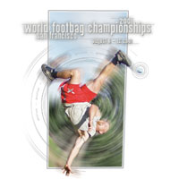

WHAT'S NEW OVERVIEW F.A.Q. FORUM MEMBERS REFERENCE CLUBS EVENTS RESULTS PHOTOS VIDEOS FREESTYLE NET GAME IFPA GROUPS RULES LINKS
*Copyright © 2026, International Footbag Players' Association
A 501(c)(3) Non-Profit Corporation
WORLD FOOTBAG CHAMPIONSHIPS
August 6-12, 2001
(concluded)
Location:
Berkeley, Albany, San Francisco
San Francisco Bay Area, California, USA
San Francisco Bay Area, California, USA
Events Offered:
NET: Open Singles and Doubles, Mixed Doubles; Women's Singles and Doubles; Intermediate Singles and Doubles, and Women's Intermediate Singles. FREESTYLE: Open Singles, Doubles, and Shred; Mixed Doubles; Women's Singles, Doubles amd Shred; Intermediate Singles. GOLF: Open and Women's. CONSECUTIVES: Open and Women's Timed and DDOP.
Results for WORLD FOOTBAG CHAMPIONSHIPS (2001)
Open Singles Net:
1. Emmanuel Bouchard (Canada)2. Jake Leong (Canada)
3. Yves Archambault (Canada)
4. Peter Shunny (USA)
Open Singles Routines:
1. Ryan Donohoe (USA)2. Scott Davidson (USA)
3. Lon Smith (USA)
4. Ahren Gehrman (USA)
5. Peter Irish (USA)
6. Eric Wulff (USA)
7. Yacine Merzouk (USA)
8. Rick Reese (USA)
9. Greg Nelson (USA)
10. Daryl Genz (USA)
11. Alex Zerbe (USA)
11. Sunil Jani (USA)
13. Toby Robinson (USA)
13. Chad Devlahovich (USA)
15. Sébastien Duchesne (Canada)
15. Juho Vesa (Finland)
17. Richie Abshire (USA)
17. Jere Vainikka (Finland)
19. Jan Zimmermann (Switzerland)
19. Gordon Bevier (USA)
21. Ilkka Malin (Finland)
21. Tu Vu (USA)
21. Dylan Fry (Canada)
21. Alexander Faber (USA)
21. Jere Linnanen (Finland)
26. Jeff Lopes (Canada)
26. Gary Lautt (USA)
26. Adam Keith (USA)
26. Jon Nagela (USA)
Open Doubles Routines:
1. Daryl Genz / Rick Reese (USA)2. Greg Nelson / Adam Keith (USA)
3. Eric Wulff / Tuan Vu (USA)
4. Ole Schnack (Germany) / Jan Zimmermann (Switzerland)
5. Tu Vu / Ahren Gehrman (USA)
6. Steve Goldberg / Ryan Donohoe (USA)
Women's Singles Routines:
1. Carol Wedemeyer (USA)2. Sam Conlon (USA)
3. Jane Zerbe (USA)
Open Mixed Doubles Routines:
1. Greg Nelson / Sam Conlon (USA)2. Eric Wulff / Carol Wedemeyer (USA)
3. Scott Davidson / Valeria Davidson (USA)
4. Sunil Jani / Melissa Schneider (USA)
5. Brian Pihl / Tara Ohr (USA)
Open Shred:30:
1. Ryan Donohoe (USA)2. Ahren Gehrman (USA)
3. Eric Wulff (USA)
Women's Shred:30:
1. Carol Wedemeyer (USA)2. Melissa Schneider (USA)
3. Jane Zerbe (USA)
Manually Entered Results
Click here for Complete Results. Open Singles Net 1.. Emmanuel Bouchard 2.. Jake Leong 3.. Yves Archambault 4.. Peter Shunny 5.. Alexis Deschenes 6.. John Leys 7.. David Bernard 8.. Andrew Ronald 9.. david Butcher 10. Christopher Michael Siebert 11. Tuomas Kärki 12. Jeff Goode 13. Mike Voightmann 14. Patrick Lee Keehan 15. Mike Patrick McCarthy 16. Yo Kelley 17. Jim Caveney 18. Chard Cook 19. Jani Sakari Markkanen 20. Greg Grandy 21. Aleksi Öhman 22. Randy W Pace 23. Olli Savolainen 24. Brent D. Allard 25. Jamie Lepley 26. Kerry Chun 27. Hugh Harrell 29. Edwin Veltman 30. Tim Tucker 30. Jesse Fryckman 31. Steve Dusablon 32. Greg Neumann 32. Steve Goldberg 32. Kern Brent McNutt 32. Nick Jaros Women's Singles Net 1.. Jody Welch 2.. Lisa McDaniel 3.. Julie Symons 4.. Marilyn Demuy 5.. Becca English-Ross 6.. Maude Landreville 7.. Kelly A. Kelley 8.. Darlene Goodridge 9.. Darlene House 9.. Leanne Makcrow Open Doubles Net 1 Yves Archambault , Alexis Deschenes 2 Martin Côté , Christopher Michael Siebert 3 Jake Leong , Yo Kelley 4 David Bernard , John Leys 5 david Butcher , Brent B. Welch 6 Andrew Ronald , Jon Hayduk 7 Randy Mulder , Peter Shunny 7 Emmanuel Guillaumme Bouchard , Robert Lavigne 9 Mike Patrick McCarthy , Jeff Goode 10 Jim Caveney , Bruce Guettich 11 Jamie Lepley , Chard Cook 12 Bill Langbehn , Greg L Durrett 13 Tuomas Kärki , Jesse Fryckman 13 Patrick Lee Keehan , Steve Dusablon 15 Greg Grandy , Tim Tucker 16 Patrick Asswad , P.T. Lovern 17 Iain McKechnie , Simon Hearsey 18 Michael P. Scheele , Randy W Pace 19 Jani Sakari Markkanen , Aleksi Öhman 19 Kerry Chun , Christopher Michael Ingle 21 Sage Woodmansee , A. J. Shultz 22 Nick Jaros , Edwin Veltman 23 Olli Savolainen , Mike Voightmann 24 Steve Goldberg , Hung Chang 25 Sam Gregory , Kern Brent McNutt 26 Hugh Harrell , Brent D. Allard Women's Doubles Net 1.. Amy Westberg/Lisa McDaniel 2.. Julie Symons/Jody Welch 3.. Tina Lewis/Kelly Kelley 4.. Marilyn Demuy/Maude Landreville 5.. Becca English-Ross , Lisa Susan Monti 6.. Darlene House , Teresa Jane Rogerson Open Mixed Doubles Net 1.. Marilyn Demuy/Emmanuel Bouchard 2.. Jody Welch/Brent Welch 3.. Julie Symons/Alexis Deschenes 4.. Becca English-Ross , David Bernard 5.. Andrew Ronald , Maude Landreville 6.. Amy Westberg , John Leys 7.. david Butcher , Lisa McDaniel 8.. Tina Lewis , Yves Archambault 9.. Yo Kelley , Darlene Goodridge 10. Jim Caveney , Kelly A. Kelley 11. Darlene House , Randy W Pace 11. Patrick Lee Keehan , Leanne Makcrow Open Singles Freestyle 1 Ryan Mulroney 2 Scott Davidson 3 Lon Sklyer Smith 4 Ahren Gehrman 5 Peter Irish 6 Eric M. Wulff 7 Yacine Merzouk 8 Rick Reese 9 Greg Nelson 10 Daryl Genz 11 Sunil S. Jani 11 Alex Zerbe 13 Toby Robinson 13 Chad Devlahovich 15 Juho Vesa 15 Sébastien Duchesne 17 Richie Abshire 17 Jere Vainikka 19 Gordon S. Bevier 19 Jan Zimmermann 21 Jere Johannes Linnanen 21 Dylan Harper Fry 21 Ilkka Malin 21 Alexander Faber 21 Tu Vu 26 Jon Nagela 26 Jeff Lopes 26 Gary Lautt 26 Adam Joseph Keith Women's Singles Freestyle 1.. Carol Wedemeyer 2.. Sam Conlon 3.. Jane Jones Open Doubles Freestyle 1 Daryl Genz , Rick Reese 2 Greg Nelson , Adam Joseph Keith 3 Eric M. Wulff , Tuan Vu 4 Ole Schnack , Jan Zimmermann 5 Tu Vu , Ahren Gehrman 6 Steve Goldberg , Ryan Mulroney Open Mixed Doubles Freestyle 1 Greg Nelson , Sam Rugeroni Conlon 2 Eric M. Wulff , Carol Wedemeyer 3 Scott Davidson , Valeria Davidson 4 Sunil S. Jani , Melissa Jo Schneider 5 Brian Pihl , Tara Ohr Open 30-second Shred 1.. Ryan Mulroney 2.. Ahren German 3.. Eric Wulff Women's 30-second Shred 1.. Carol Wedemeyer 2.. Mel Schneider 3.. Jane Jones Intermediate Singles Freestyle 1 Brian T. Parsons 2 Dan Klokow 3 Stan Sagalovskiy 4 Sam Colclough 5 Andrew Johnson 6 Jeremy Benton 7 Ole Schnack 8 Peter Andre Bevitori 9 Chris Pinkus 10 Jeremy Mirken 11 Benjamin Lee Cooke 12 Nathan Martinez 13 Brian Pihl 13 Jim Moreau 13 Theodore J Fritsch 13 Chris Thomas Wollick 17 Nick A Szwarc 17 Mathias John Edawrds 17 Jake S. Milofsky 20 Eric Reile 21 Casey Jones Intermediate Singles Net 1 Patrick Schrickel 2 Tim Melnyk 3 Florian Goetze 4 Joel Dion 5 Jan Zimmermann 6 Theodore J Fritsch 7 Tim Daniel Livson 7 Jeremy Chase Kumbruch 9 Sam Gregory 11 Ole Schnack 11 Leanne Makcrow 11 Ariel Santesteban 13 Christian Dam 14 Scott Ellenberger Intermediate Doubles Net 1.. Patrick Schrickel/ Florian Goetze 2.. Tim Melnyk/Joel Dion 3.. Kayla/Marcus 4.. Ariel Santesteban , Theodore J Fritsch 5.. Ole Schnack , Jan Zimmermann 6.. Itzik Netanel , Tim Daniel Livson Open Golf 1.. Jamie Lepley 2.. Steve Dusablon 3.. Hugh Harrell Women's Golf 1.. Becca English-Ross 2.. Kelly Kelley Intermediate Golf 1 78 Theodore J Fritsch 2 82 Tim Daniel Livson 3 87 Sam Gregory Open 5-Minute Timed Consecutives 1 794 Scott Davidson 2 730 Peter Shunny 3 703 Chard Cook 4 685 Jack s Bissell 5 398 Steve Dusablon Women's 5-Minute Timed Consecutives 1.. Sam Conlon (660) 2.. Tina Lewis 3.. Kelly Kelley Open Doubles Distance One-Pass 1 118 Andrew Ronald , Maude Landreville 2 53 Jim Caveney , Bruce Guettich 3 52 Peter Shunny , Chard Cook 4 50 Jake Leong , Scott Milne 5 27 David Bernard , Steve Dusablon 6 david Butcher , Christopher Michael Siebert Women's Doubles Distance One-Pass 1.. Tina Lewis/Kelly Kelley 2.. DJ Williams/Laura Zeller
Related Photos:
|
Related Videos:
|

|  | Detailed information is available on the 2001 World Championships home page. Please go there and print that page, and use the online registration form to reserve your spot in this summer's event. Registration deadline is midnight (California time) on Sunday, July 29th. |
Created Wednesday, January 31st, 2001, 11:31am (PST); last update Tuesday, July 2nd, 2013, 05:31pm (PDT).